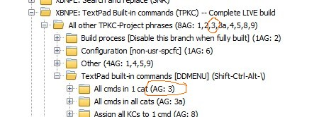

[BACK] (XBN-PhraseExpress is released under the LPGL 2.1)
This document is intended only for those altering the XBNPE (TPKC) project itself, or needing to understanding its technical details. There is also TPKC-build-process information for TPKC-users.
Contents:
[GO] All TPKC build processes occur entirely in TextPad.[GO] Before everything else: Manually creating the raw-global-configuration[GO] Full versus RAW: Phrases to execute one TPKC-build-process only[GO] Live versus test build: Building the entire TPKC-Project, or only part, for testing and demonstration purposes[GO] PhraseExpress folder structure[top] TPKC-build: PhraseExpress folder structure XBNPE: Parent folder >
XBN-PhraseExpress >
(go) XBNPE-TPKC: TextPad built-in commands >
All other TPKC phrases (8AG:1,2,3,3a,4,5,8,9) >
Build process [Disable this branch when fully built] (1AG:2) >
(info) Part 1of4: Generate global command config
(info) Part 2of4: Verify global-cmd-ccfg, prep for usr-cmd-cfg
(info) Part 3of4: Generate user-cfg from tpacl (1AG:2)
zSUB (1AG:2 // 2 vrsn-spcfc)
(info) Part 4of4: Create nbs-phrss & tp-pcddmenu
zSUB
(go) z-Auto-generated (AG) output (multiple builds, only 1 enabled)
[top] TPKC-build: Import locations and choosing a TPKC versionThe TPKC master-configuration-variable
zzTpkcBuildVersionName
represents the currently active
The TPKC user-build-process writes its output ("auto-generated", or "AG") phrase-files into one of the on-disk "output_*" folders in your TPKC-user-directory. Which one is determined by the TPKC master-configuration-variable
zzTpkcBuildVersionName
For example, if "zzTpkcBuildVersionName" is "test3", then all user-build output is written to
{#insert zXPROOT_DIR_tpkcUsrCfgUserBase_M_tudn}output_test3\
or one of its sub-directories. "test3" is its "build-version".
"live"). There may also be zero or more "test" versions, each representing a different subset of categories.
These phrase-files are then imported to one of these three PhraseExpress folders (see "switching TPKC versions"):
In each of these three locations, there is the exact same set of versions as there are on-disk"output_*" folders in the TPKC-user-directory. For example, these TPKC-user-directory output foldersoutput_liveoutput_testLIVE buildTest build (file, config, tools)zzTpkcBuildVersionName, must be enabled in all of these locations (to enable, right click on the folder and check "Enable Autotext/Hotkeys"). All other versions must be disabled.
In PhraseExpress, many folders throughout the TPKC project are postfixed with, for example:
"Other (4AG: 1,4,5,9)"
This indicates that there are four sets of auto-generated output, as created by TPKC sub-build-processes 01, 04, 05, and 09. This is not where these output-phrase-files go (it used to be). However, since these locations are where these files logically reside (and therefore describe which phrases, in which folders, need them), these AG-postfixes remain.
[top] TPKC-build: Import locations: "Other-AG-output" folderContains all auto-generated files not in the TPKC-user-directory or -user-menu.
XBNPE: Parent folder
XBNPE-TPKC: TextPad built-in commands >
All other TPKC phrases >
(go) Build process
z-Auto-generated output
TPKC-build-AG: LIVE build
master-build 1of4 (indv:1,2,4, ddmenu:3,3a)
05: Call VPM for each cmd in 1 cat
06: Global command configuration
[1 folder per-category]
master-build 2of4 (no output:7, ddmenu:8)
09: Set cmd1 var to 1 cmd
TPKC-build-AG: FGH-test (file, config, help categories)
...same directory structure...
Key:
indv: The processes that output a single phrase-file. Import these file directly into the "indv" folder.ddmenu: Processes that output phrases needed by the TPKC-user-menu (and should be imported there instead).The "LIVE" and "FGH-TEST" folders facilitate switching between TPKC-build versions. Exactly one version (either fgh or live) must be enabled at any one time. Which version should be enabled is determined by the TPKC master-config-variable
zzTpkcBuildVersionName
[top] TPKC-build: The master and sub-build processesThere are four master processes, each calling a set of children (or "sub") processes. This section specifically documents each processes input and output, as well as the process itself.
The four master processes, the first two of which are executed only by the TPKC-admin, the second two by every TPKC-user:
zTpkcMasterBuild1of4: Broadly speaking, this reads in the raw-global configuration, and generates the global-command-configurationzTpkcMasterBuild2of4: Verifies the imported global-command-config, and prepares for creating user-command-config.zTpkcMasterBuild3of4: Reads in the TextPad all-command list, and generates user-command-configuration.zTpkcMasterBuild4of4: Reads in user-command-config, and generates the Non-BootStrap (nbs) phrases, and the active-tp-command ddmenu.After each process is complete, all output phrases must be imported to their appropriate locations in the PhraseExpress application. For example, the output of build-process-03 is indicated in PhraseExpress by "AG:03" in its destination folder's description.

Note that process 07 has no output at all, and processes 10, 11, and 12 have no importable output.
An alternative method to triggering these build processes, is via 'xhtkab'.
zTpkcMasterBuild1of4[top, BACK, 1of4, 2of4, 3of4, 4of4]
See below for two videos demonstrating preparing for, and then running this master-build-process 1-of-4.
"zTpkcMasterBuild1of4" calls each of the following, in order:
[GO] zTpkc01CreateSetCatlVarPhrsFile[GO] zTpkc02CreateTPBtstrpQblAndMrkRGCRegex[GO] zTpkc03CreateAll_allCmdsIn1CatPhrsFiles[GO] zTpkc03aCreate_AllCmdsAllCats_PhrsFile[GO] zTpkc04CreatePhrsFl_callVPMForEachCatAndAllCatCnt[GO] zTpkc05CreateAll_callVPMForAllCmdsInCat_pFls[GO] zTpkc06CreateGlobalCommandConfigFromRawTo open all output directories in Windows Explorer windows, use
zzzTpkcBuld1of4OpenAllOutputDirs
This is to make the importing of this processes output easier. This is automatically triggered (after confirming with you) at the end of the process.
[BACK] Video: Eliminating all old auto-generated files, to prepare for a new build (and setting build-mode to "test")[BACK] Video: Running TPKC-build master-process 1of4 (in test mode)Addendum: The locations into which auto-generated files are placed has changed.
zTpkcMasterBuild2of4[top, BACK, 1of4, 2of4, 3of4, 4of4]
"zTpkcMasterBuild2of4" calls each of the following, in order:
[GO] zTpkc07VerifyImportedGlobalCmdCfg[GO] zTpkc08CreateSetAllKCsTo1CmdPhraseFiles[GO] zTpkc09CreateAllSetCmd1VarPhraseFilesTo open all output directories in Windows Explorer windows, use
zzzTpkcBuld2of4OpenAllOutputDirs
[BACK] Video: Running TPKC-build master-process 2of4 (in test mode)zTpkcMasterBuild3of4[top, BACK, 1of4, 2of4, 3of4, 4of4]
"zTpkcMasterBuild3of4" calls each of the following, in order:
[GO] zTpkc10ElimBtstrpKCsFromTpAllCatLst[GO] zTpkc11SplitNbsAllLstToIndvCatLsts[GO] zTpkc12CreateRawUsrCfgFromIndvCatLists[GO] zTpkc13CreateUsrSpcfcCmdConfigFromRawTo open all output directories in Windows Explorer windows, use
zzzTpkc13OutroDlgMaybeOpenOutDir
This is used instead of (the non-existant!)
zzzTpkcBuld3of4OpenAllOutputDirs
because the only importable output generated is by
zTpkc13CreateUsrSpcfcCmdConfigFromRaw
zTpkcMasterBuild4of4[top, BACK, 1of4, 2of4, 3of4, 4of4]
"zTpkcMasterBuild4of4" calls the following, in order:
To open all output directories in Windows Explorer windows, use
zzzTpkcBuld4of4OpenAllOutputDirs
[top] Full versus RAW: Phrases to execute one TPKC-build-process onlyEach build sub-process (01 through 15) is executed by its master. For example, sub-build '02' is executed by the '1of4' master process. A Full Run of a sub-process goes through its entire setup (its "exclusive" setup), in order to ensure that it will run properly. For example:
Each sub-build also has a "RAW" process, which is the "core" of its functionality. Specifically, it is the part that executes after all setup is complete. This is useful for testing and diagnostics only.